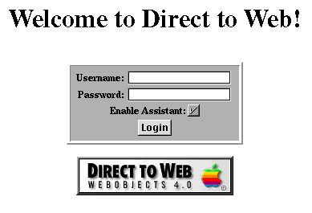
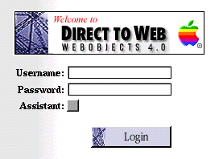
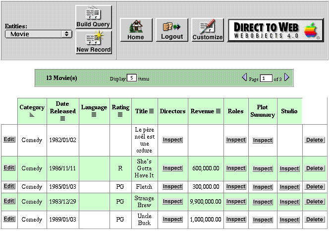
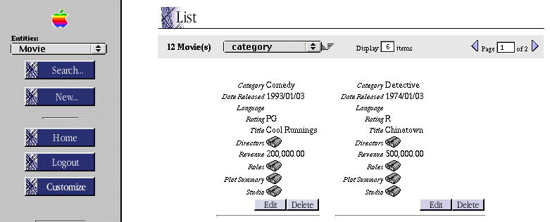

Table of Contents
Table of Contents  Next Section
Table of Contents
Next Section
Table of Contents  Previous Section
Previous Section
The essential difference between the Basic look and the WebObjects look is that the latter look uses more graphics, particularly the spider-web image. But there are also differences in the style and placement of user-interface elements. The HTML in the Basic look is simple and straightforward, which makes the Basic look more suitable if you intend to freeze your pages and then customize them..
The login page for the Basic look has a panel-like submit form for the entry of user name and password:

The login page for the WebObjects look presents the submit form without the enclosing panel:

In the dynamically-generated pages (query, list, inspect, and so on), the differences between the Basic look and the WebObjects look are even more striking. In the Basic look the control header runs across the top of the page whereas in the WebObjects look it appears on the left side of the page. In addition, the Basic look is more tabular while the WebObjects look tends to present records in visual "blocks." For example, the following is an example of a list page in the Basic look:

The following illustrates what a list page looks like in the WebObjects look.

Table of Contents Next Section